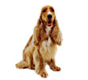
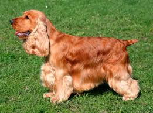

Английский кокер спаниель
| Характеристика | Значение |
|---|---|
| Страна происхождения: | Англия |
| Рост: | 28 - 36 см |
| Вес: | 6 - 10 кг |
| Продолжительность жизни: | 14 - 16 лет |
Характер английского кокер спаниеля
 Английские кокер спаниели игривые, веселые, отзывчивые и нежные по своей природе собаки. Они очень общительны и любят находиться рядом со своими любимыми людьми. Преданные и оптимистичные английские кокер спаниели прекрасные домашние питомцы и хорошо подходят как для большой семьи, так и для одиноких людей. Однако, в семье, они вероятнее наиболее сблизятся с одним человеком. Стоит отметить, что некоторые английские кокер спаниели могут быть чрезмерно зависимыми от своих владельцев, таким образом, важно научить своего питомца быть более самостоятельным.  Среди английских кокер спаниелей встречаются робкие и застенчивые собаки, хотя большинство из них очень общительные. Кроме того, сучки имеют тенденцию быть более упрямыми и доминировать, по сравнению с кобелями. Английские кокер спаниели всегда хотят угодить своему хозяину, поэтому быстро учатся. Однако некоторые английские кокер спаниели склонны к чрезмерному лаю. Эта породы собак очень хорошо подходит для содержания с детьми, а так же в большинстве случаев дружелюбна по отношению к незнакомым людям. Английские кокер спаниели хорошо уживаются с домашними животными, поэтому прекрасно подходят для содержания с другими питомцами в доме. Некоторые английские кокер спаниели бывают упрямыми и отличаются собственническим отношением, особенно, когда дело доходит до таких вещей, как их игрушки. Из этой породы получаются хорошие охотничьих собак. Когда английские кокер спаниели участвуют в охоте, они очень упорно работают, кажется, что эти собаки никогда не устают от охоты.